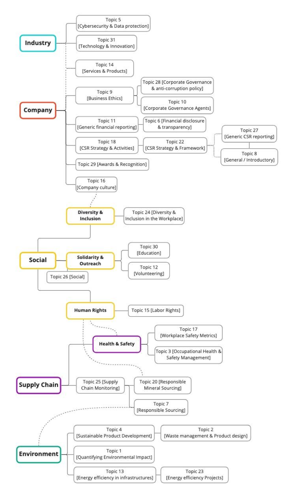

Tech CSR Topics
Analyzing Corporate Social Responsibility discourses in the tech sector
through quantitative topic modelling and qualitative thematic analysis.
Approach
I collected a corpus of over 1,000 Corporate Social Responsibility (CSR) reports from tech companies, spanning from 1997 to 2021. I used topic modeling to uncover common threads within CSR discourses in the tech sector, comparing topics across time and companies. To find meaningful topics, I cross-references outputs from Latent Dirichlet Allocation (LDA), Biterm topic model (BTM), non-negative matrix factorization (NTM) and Correlation Explanation (CorEx) models. These outputs were then used as a basis for thematic analysis.
Findings
I found that tech companies increasingly rely on regulatory bodies in their CSR discourses, both in demonstrating compliance and as a deflecting strategy. High-level themes included environmental responsibility, social responsibility, AI and data protection concerns, supply chain monitoring, and company-level initiatives and accomplishments. Further topic analysis revealed underlying green-washing and social-washing strategies embedded in CSR reports.
